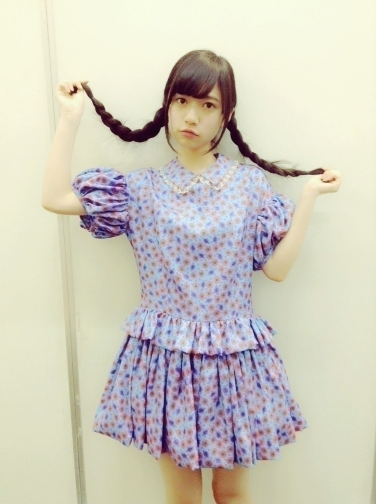
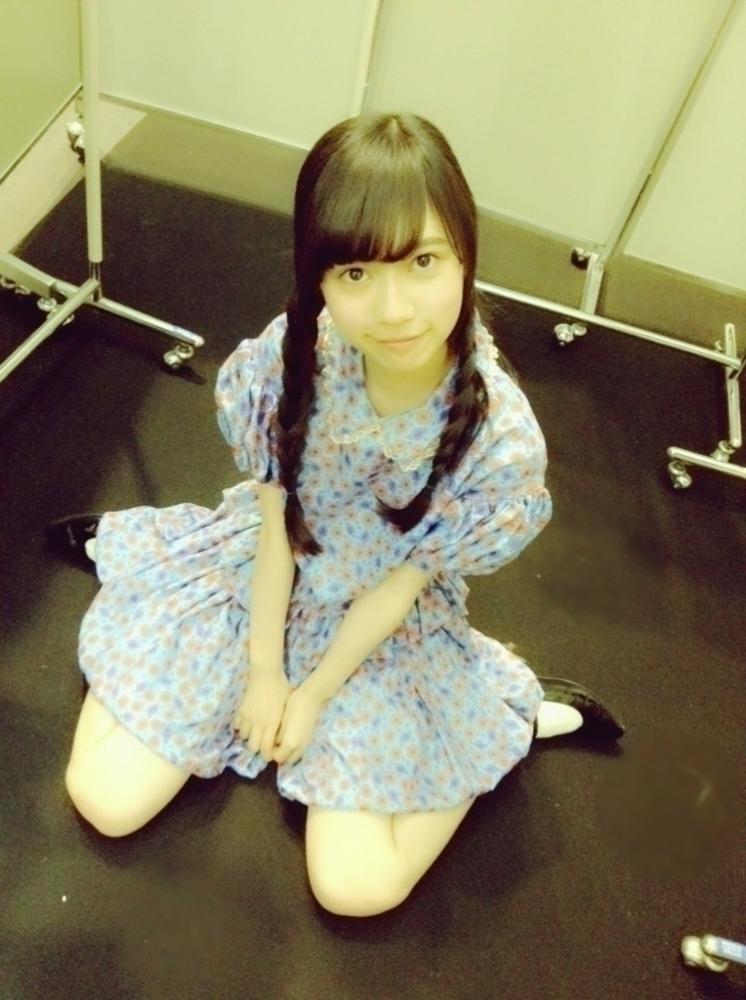
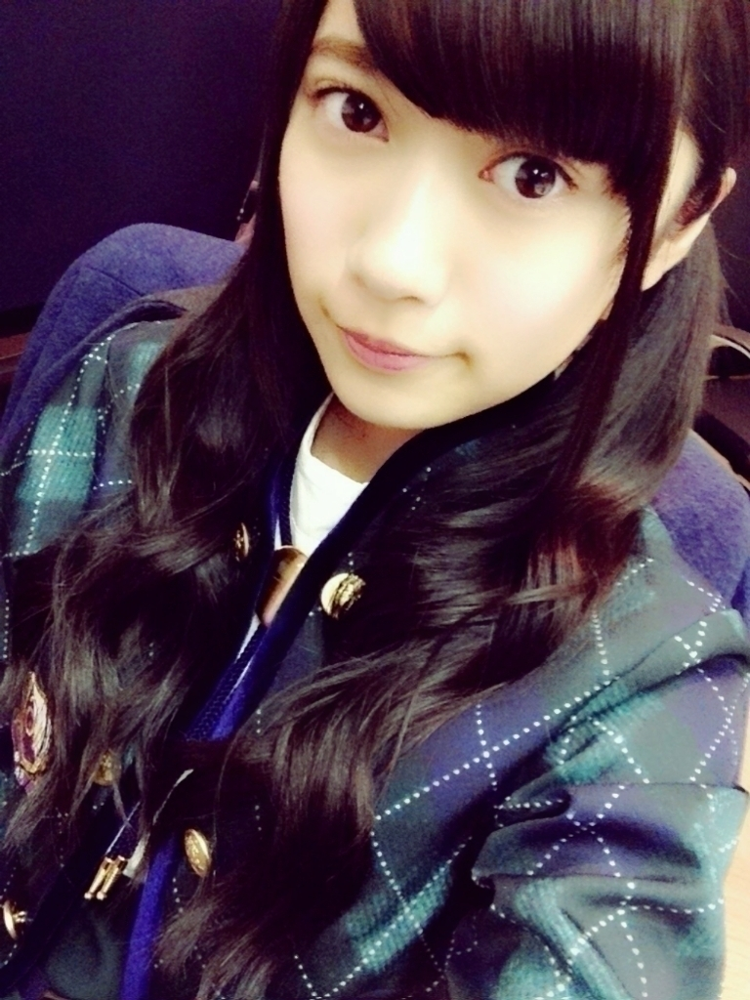
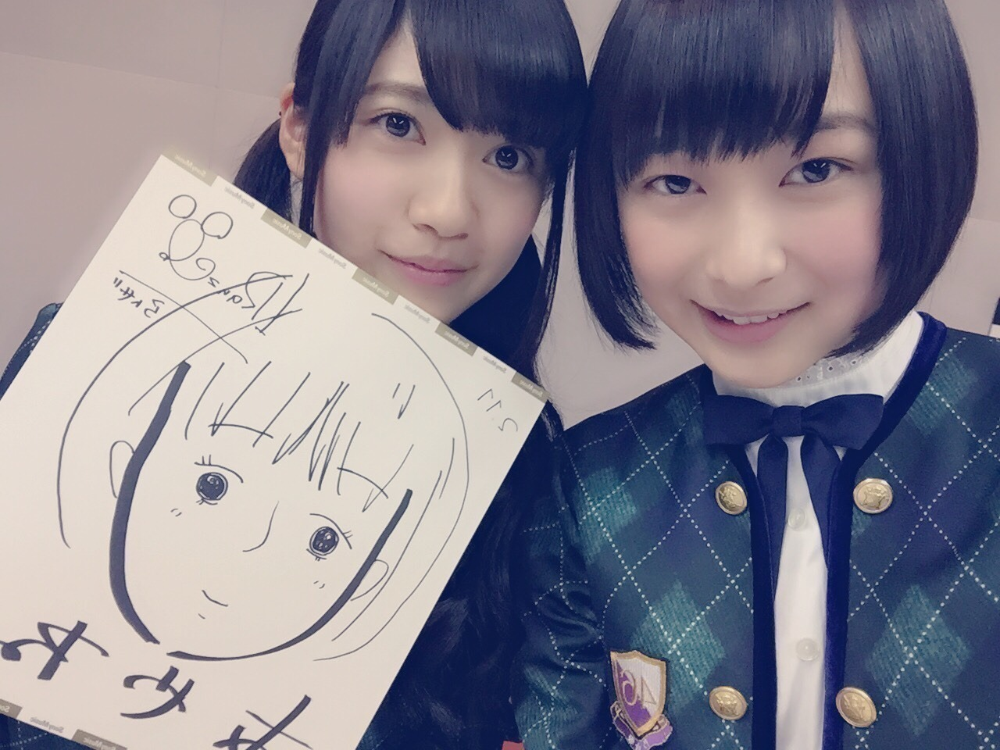

2015/0219Thu孤独だっていいじゃなーい♪ ちなみに歌ですわかる人にはわか る
おはようございます
こんにちは
こんばんは
らんぜのいきおい？
とまらんぜ
寺田蘭世です。
本日もよろしくお願い致します
今回のブログでは
前回のコメントの中から
特に、嬉しかったコメントや
ほっこりしたコメントを
紹介したいと思います( ˙-˙ )♪
初めてライブに行くので
どんなものなのか不安ですが、
その10,000倍楽しみの気持ちが
強いです*\(^o^)/*
らんぜちゃん！初コメです！
私はらんぜちゃんと同じみよじで
らんぜちゃんの事が
ずっと気になってて///
初コメしました...
らんぜちゃんが乃木showでてて
嬉しかった！！
髪もおろしてるの似合うから
可愛かったよ(*^^*)
すごくレーンが盛況だったから
俺も久しぶりだったけど
嬉しかったよ(*´-`)
蘭世の魅力がいろんな方に
知れ渡ってきた証拠だね♪
らんぜちゃん！こんにちはー！
らんぜちゃんのブログは見てて
楽しい！丁寧なブログ好き！
最近ますます
らんぜちゃんが気になって笑
アナザージャケット、
花組ポーズ当たりました
これは蘭世らしいジャケット
思わず笑顔に
birthdaylive行きます！
蘭世もリハーサルや
本番気を付けてね(>_<)！
本当に楽しみだなぁ～
らんぜちゃん！
受験合格したよっ(๑´ω`๑)
看護師さんになれるよう
頑張ります(笑)
蘭世！蘭世！
ブログ更新だ！わーい！
こないだの握手会お疲れ様！
蘭世と握手して
元気でたし癒されたよ。
なんか楽しいブログ！
蘭世のバースデーライブの
寒さ対策やるね！
まぁでも盛り上がれば寒さなんて
吹き飛んじゃうかもね！
それぐらい楽しもうーーー！
らんぜちゃん、こんにちは〜
ブログ更新ありがとう！
らんぜちゃんのファンを
気遣ってくれる
このブログに
お兄さん感動しました〜泣
バースデーライブめちゃめちゃ
盛り上げましょうね
楽しみにしてまふ
Dear蘭世さん
はじめてコメントします。
実は蘭世さんのことが
少し気になってます。
らんぜの気づかいに
感謝がとまらんぜーーーーーーーー!!|＾▽＾)ノ
今から防寒対策しっかりしておくね
ありがとー（´ 3｀)
『乃木坂46 SHOW!』――
お説教部屋、愉しく拝見しました。
年齢のくだりは
いかにも蘭世さんらしくて
すっかり和みました。笑
マッサージマッサージ
自主練しているのなら
少し休みましょう
休ませることも仕事だよ
ではまた後程
俺もライブに向けて
密かにランニングとかしてる 笑
当日の防寒着もかんがえたし
早くこんかなー
お互い当日に向けて頑張ろうd(^_^o)
他にも沢山のコメント
いつもありがとうございます
皆さんのおかげで頑張れます。
アルバム握手会○
京都でのアルバム握手会は
春のメロディーを着ました！
アンダーライブのセンター企画で
春メロセンターをやらせて
もらったから
この衣装を着て欲しいと
沢山の方にコメント頂いたので
着てみました。
しかし、いつもより
ファンの方が少なくて
少々悲しかったです( ˙-˙ )
来てくれた方はレアだよ、、、笑
撮影：おそらく相楽伊織

写真はっておきます
最近いおりちゃんが
らんぜ可愛い可愛いって
今まで以上に言ってくれるから
照れる、、、
のぎ天○
握手会楽屋にて
生配信されました！のぎ天のぎ天
のぎ天さん楽しい
出演しているメンバーそれぞれ
いろんな衣装着てるから
なんか新鮮
私はもちろん握手会できた
春のメロディーを着てます
髪型は三つ編みだよ

みてくれた方？
のぎ天生配信
とても楽しかったです
ここ数日毎日が濃ゆくて
ブログに何書いていいのやら、、、
かなめ様のことは
モバメであついめーるを
送りました( ˙-˙ )！！！！
グスタフ本当に最高でした
約15年間お疲れさまでした
千秋楽観に行った方いますか？！
かなめ様にお会いしたい
宝塚行きたい！
そういえば先日の乃木どこの
バレンタイン企画で
生田さんが白石さんに
宝塚のペアチケットを
贈っていましたね♪
東京はこれから
雪組さんのルパンですね♪
ちぎ様の
アドリブが面白いらしいですね
絶対観に行きたい
花組から雪組に組み替えした
だいもん様を観に行かなくては
ルキーニかっこ良かったな、、、♪
宝塚のことな！！！！
まだまだ新参者なのですが
乃木坂46のなかなら
一番詳しいはず！！！！
生田さん白石さん
ご観覧の際はオペラグラスを
持って行かれたほうが
楽しいかもしれません！！！
終
あやねちゃん
細ペンと太ペン間違えてしまいました人の顔を描くときは輪郭からかくからね、、、
2015/02/19 11:18


コメント(621)
バースデーライブまでもう少しだね！
約8時間のライブ…体力的にもプログラム的にも、衣装だから寒さもとんでもなく大変だよね…(;д;)
ファンにはポンチョが配られるみたいですし、それぞれ蘭世が教えてくれたような寒さ対策はしてくるから問題ないけど、メンバーたちは対策出来ないから大変なんだろうなって思います(;д;)
怪我など絶対しないようにしてくださいね(._.)
今日も蘭世に元気を届けます！
蘭世ファイトーーー！！！(੭ु⁾⁾ọ̶̶̷̥᷅ωọ̶̶̷̥᷅)੭ु⁾⁾
頑張れーーーー！！！！！٩(๑•̀ω•́๑)و
らんぜの勢い？
とまらんぜ( ˙-˙ )
Mブロックだったよ！
バースデーまでのモチベがとまらんぜ状態です
とまらんぜつかってみたかったわw
また後でコメするね！
はりょう
握手たのしみ！
どうもバスケットマンです！
忙しくて大変なのにブログ更新ありがとう！
また後でちゃんとコメントするねー
では、取り急ぎ失礼いたします
もうすぐでLIVEだ！
今は忙しいと思うけど頑張ってね！
楽しみに待ってるよ！！
タオル持ってくからね！
ふぁてぃん！！
席は遠いですが届くぐらい特大のℓσνє放出します
ライブリハーサル頑張ってね〜( ´ ▽ ` )ﾉ
ライブ楽しみ楽しみ〜♪( ´▽｀)
毎日レッスンお疲れ様〜
いよいよ近くなってきたね！
大変だと思うけど蘭世の事見てるから思いっきり全力で！
楽しんで！
俺も楽しむよぉ٩( 'ω' )و 笑
あ、のぎ天の生放送見逃した泣
まぁどこかで見ます。笑
宝塚の事でいくちゃんやまいやんと仲良くなれたらいいね！笑
似顔絵行きたかったな〜泣
いつか行きます←笑
んじゃレッスンふぁいと〜！
なーりー。
のぎ天生放送見たよ〜*\(^o^)/*
春メロの衣装似合ってて可愛いかった\(//∇//)\
最近ずっと忙しいと思うけどライブまで残りわずかだから頑張ってね(o^^o)
近々初蘭世しに行きます(=´∀｀)人(´∀｀=)
もうすぐbirthdayliveだね！
寒いけど風邪ひかないようにがんばってね
今日発券しにいってきます！
どこかなー席⁽⁽ ◟(灬 ˊωˋ 灬)◞ ⁾⁾
くるちゅん。
京都個別確かに人少なかったね。。
行けるかわからんかったから１枚しかなくて。。ごめんね(･_･、)
もっとぐるぐるしたかったよ(´･ ･`)
バースデーライブは楽しみにしてるね( ´ ▽ ` )ﾉ
次の個握先だけど取るね！
初きんちょー(^^)
いよいよ3日後ライブだね( ^ω^ )
ライブで元気ならんぜを見たいから
体調管理に
気をつけてリハ頑張って♪
らんぜの勢いとまらんぜ☆
らんぜお疲れ様！
らんぜめっちゃかわいかった( ´∀｀)たまらんぜ
さすがに今回は泣かなかったね！笑
アルバムのとき外から手振ってばっかでごめんよー…
そのぶん十一枚目は行きますけー！笑
あとバースデーもね！
じゃあまた！
タイトルの歌、わからんぜ。
のぎ天見たよ！春のメロディーの衣装、似合ってた！
蘭世、目力が凄いね。
バースデーライブ行くからね！頑張って！
リハおつかれさま！
辛いだろうけど頑張ってね(^-^)
バースデーの席も分かったしレスもらえるように頑張ります（笑）
バイト休憩の間にコメントしてるよ〜
あと9時間くらい働く（笑）
お互い頑張りましょう！
蘭世のブログすごい好きだよ！！
京都も行ったよ(^_^)v
衣装に着いて話すの忘れてたけど、春メロの衣装だってもちろん気付いたよ。
お団子みたいな髪型と春メロの衣装可愛かったよ。
レアな姿も見れたし、蘭世も喜んでくれた気がするし行って良かった(^o^)
ライブ期間中はライブに集中して大丈夫だよ。
本番楽しみしてるよ。
握手したいぜ
握手会行けたら行きたいと思っています
あまり無茶だけはしないで頑張ってください
いつまでもファンです
もすぐライブだね！練習も激しいだろうけど！
頑張ってください！
そして本番は、なによりも楽しもう！！w
いま、風邪気味だけど、それまでにしっかり治して
明明後日のバースデーは、らんぜもみんなもオレも盛大にわきまくろうー！！
そして一生もんの最高の3rdバースデーライブにしよう！！＼(^o^)／
自分は受験生なので今までコメントは我慢してましたが、無事合格出来ました！
僕は広島に住んでいて、乃木坂さんは広島みたいな田舎にそうそう来ないので(苦笑)東京の大学に合格して、蘭世さんに会うことを目標に頑張ってました！
合格できて良かったです。いつかお会いしましょう。
蘭世の言う通り
防寒対策バッチリでいくよ
らんぜえええええ！！！
待ってたよ、ブログ♡
忙しいと思うけど、ちゃんと寝てちゃんと休んでちゃんと食べてね(＾ω＾)
うちも京都スペ握行ったよ～\( ˆoˆ )/
らんぜのとこはいってないけど(´･_･`)(笑)
でもひたすら
らんぜレーンの後ろからめっちゃ手振ってた
女の子二人組のうちの赤いニット帽かぶってた者です...！
らんぜにエアー握手求めたらおいでおいでされて...もう...やられました...
11枚目、らんぜのとこいきます...！！
またニット帽かぶってく～\( ˆoˆ )/
らんぜ推しの男の人と話したんけど
宝塚めっちゃ好きみたいで
推しとの共通の話題あって
めっちゃ盛り上がってて楽しそうだった乁( ˙ ω˙乁)
うちもいつか宝塚見に行きたいって思った！！！
たぶん5/24に行くから
赤いニット帽のすみちゃんって覚えといて！！(笑)
バースデーライブも楽しみにしてる～♡
らんぜのいきおいとまらんぜっ！！！
三つ編み良すぎるー。
伊織ちゃんはなかなか気が多いね（笑）
のぎ天、生配信。かりんちゃんは蘭世にたくさん
振ってくれて2期生愛を感じました。
バレンタインのお返しは宝塚グッズとか言うのかな
と思っていたら蘭世さん謙虚ですな。
☆蘭世にブログで「初心者でもわかる宝塚入門」
みたいなのやってもらいたい。
○組はこういう特色があって、とか。
宝塚の舞台ではこういう演出が特色です。とか。
注目して見るべきこととかを
個人ブログにもなったし、れなちの
れなふぉとみたいにコーナー化してみるのは
どうかなーって。
宝塚の話題で？ってなってしまう人も
蘭世ブログを見てれば次第に蘭世の好きなものが
わかるようになっていったらいいのかな？
と思います。
あっ…まずはバースデーライブ頑張って！(・ω・)
らんらん可愛いー(///ω///)♪
らーんーぜ！
毎日おつかれさま
リハお疲れ様(o'ω'o)
なんか不意にコメントしたくなったからしてみました！
録音会の時近くで蘭世のことみて改めて可愛いなって思いましたヽ(・∀・)ノ
久々に握手いきたいな…
ライブ頑張ってね！！
楽しいブログ＆メールありがとう！
少しでも蘭世にコメント通じてパワーいっぱい送りたいっていう気持ちは一番だと思う！！！！！
どやっ！！！笑
(・_・)♪
もうすぐ大事な試験があって
それに受かって立派な社会人になったら
会いに行けるからちょっとまってて！！
おはよう～
最近花粉が飛んできて鼻水とまらんぜ状態です笑
もう少しでライブ本番だね。めっちゃ寒いみたいだしそれで衣装はやばいねΣ(ノд<)なんとか体調崩さないでください。
楽しみにしてるね。
リハふぁいと！
次の握手会は 蘭世目当てにダッシュで行きます！
よろしくお願いします！！
のぎ天見ましたよ〜。
真夏の次をいく釣り師なんですか〜（笑）
らんぜちゃんもとってもかわいいのでいおりに「いおりもかわいいよ〜」とか言って2人でデレデレするのもまた面白そうだよ〜‼︎
ライブまであと僅か‼︎楽しみにしてるよ〜（≧∇≦）
(・ω・)ノ
コメントする